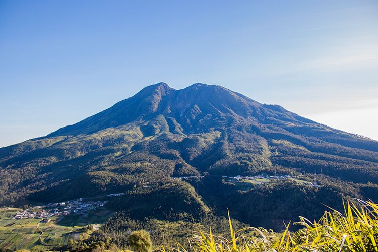

Sejarah
Nama Karanganyar berasal dari pedukuhan yang berada di desa ini.
Nama ini diberikan oleh Raden Mas Said (Mangkunagara I), karena di
tempat inilah, ia menemukan kemantapan akan perjanjian baru (bahasa
Jawa: anyar) untuk menjadi penguasa setelah memakan wahyu keraton
dalam wujud burung derkuku.
Dalam perjanjian baru tersebut Beliau berhasil mendapatkan
kemantapan untuk menjadi penguasa daerah Karang. Karena dalam bahasa
jawa kata "baru" adalah "anyar" maka sejak saat itu dinamai
Karanganyar.
Geografis
Kabupaten Karanganyar terletak antara 1100 40” – 1100 70” BT dan 70
28” – 70 46” LS. Kabupaten ini berbatasan dengan Sragen di utara,
Ngawi di timur, Wonogiri di selatan, serta Surakarta dan Sukoharjo
di barat.
Bagian barat Karanganyar merupakan dataran rendah, yakni lembah
Bengawan Solo yang mengalir menuju ke utara. Bagian timur berupa
pegunungan, yakni daerah dari Gunung Lawu. Sebagian besar daerah
pegunungan ini masih tertutup hutan. Sehingga udara disini tidak
terlalu panas.
Wisata
Keasrian alam Karanganyar masih terjaga, sehingga tidak sedikit
potensi destinasi alami yang masih belum tereksplorasi. Namun
seiring menjamurnya seleb traveler yang gemar mengunjungi
tempat-tempat terpencil, perlahan wisata alam Karanganyar kian
dikenal publik.
Gunung Lawu

Bagi kalian yang gemar mendaki gunung wajib hukumnya ‘mencicipi’
track pendakian di Gunung Lawu. Puncak yang berada di ketinggian
3.265 mdpl ini berada di antara dua wilayah yaitu Karanganyar dan
Magetan.
Jalur pendakian tidak pernah sepi, baik oleh pendaki profesional
maupun pemula. Tracknya cukup aman bagi pendaki awal meskipun
lebih baik didampingi ahli. Titik awal pendakian dinamakan Cemoro
Sewu, sedangkan titik akhirnya Cemoro Kandang.
Air terjun Grojogan Sewu
Air terjun Grojogan Sewu dekat dengan kawasan hutan yang masih
asri, sehingga kadang masih bisa menemui fauna seperti kera di
waktu-waktu tertentu. Untuk bisa menuju air terjun ini harus
menyiapkan stamina lebih karena harus meniti sekitar 1.200 anak
tangga.
Di gerbang pembuka akan disambut dengan patung kodok dan ular
raksasa. Selanjutnya perjalanan akan ditemani rimbun hutan beserta
suara fauna yang hidup di dalamnya. Begitu sampai akan takjub
dengan keindahan alam air terjun tinggi yang mengalir dari tebing.